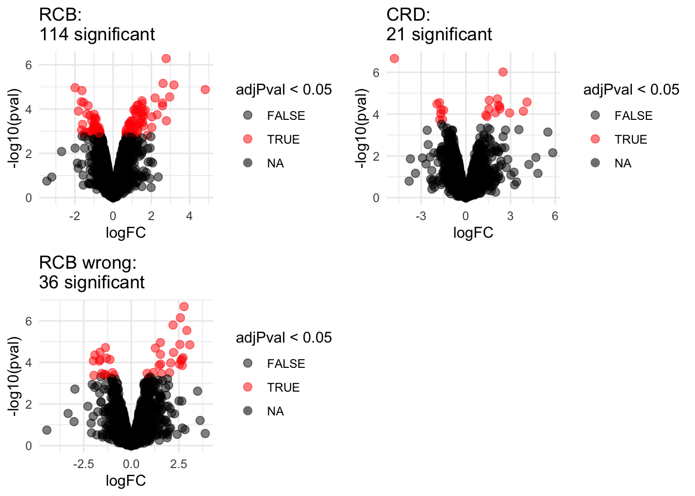
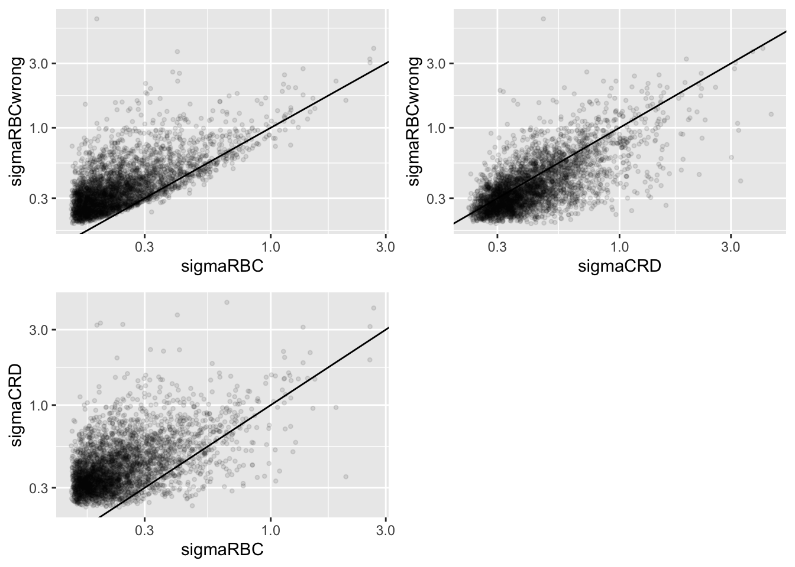

Statistical Methods for Quantitative MS-based Proteomics: Blocking - Wrap-up
Lieven Clement
statOmics, Ghent University

This is part of the online course Proteomics Data Analysis (PDA)
1 Import Data and Preprocessing
1.1 Data
Click to see code
library(tidyverse)
library(limma)
library(QFeatures)
library(msqrob2)
library(plotly)
library(gridExtra)
peptidesFile <- "https://raw.githubusercontent.com/statOmics/PDA22GTPB/data/quantification/mouseTcell/peptidesRCB.txt"
peptidesFile2 <- "https://raw.githubusercontent.com/statOmics/PDA22GTPB/data/quantification/mouseTcell/peptidesCRD.txt"
peptidesFile3 <- "https://raw.githubusercontent.com/statOmics/PDA22GTPB/data/quantification/mouseTcell/peptides.txt"
ecols <- grep("Intensity\\.", names(read.delim(peptidesFile)))
pe <- readQFeatures(
assayData = read.delim(peptidesFile),
fnames = 1,
quantCols = ecols,
name = "peptideRaw")
ecols2 <- grep("Intensity\\.", names(read.delim(peptidesFile2)))
pe2 <- readQFeatures(
assayData = read.delim(peptidesFile2),
fnames = 1,
quantCols = ecols2,
name = "peptideRaw")
ecols3 <- grep("Intensity\\.", names(read.delim(peptidesFile3)))
pe3 <- readQFeatures(
assayData = read.delim(peptidesFile3),
fnames = 1,
quantCols = ecols3,
name = "peptideRaw")
### Design
colData(pe)$celltype <- substr(
colnames(pe[["peptideRaw"]]),
11,
14) %>%
unlist %>%
as.factor
colData(pe)$mouse <- pe[[1]] %>%
colnames %>%
strsplit(split="[.]") %>%
sapply(function(x) x[3]) %>%
as.factor
colData(pe2)$celltype <- substr(
colnames(pe2[["peptideRaw"]]),
11,
14) %>%
unlist %>%
as.factor
colData(pe2)$mouse <- pe2[[1]] %>%
colnames %>%
strsplit(split="[.]") %>%
sapply(function(x) x[3]) %>%
as.factor
colData(pe3)$celltype <- substr(
colnames(pe3[["peptideRaw"]]),
11,
14) %>%
unlist %>%
as.factor
colData(pe3)$mouse <- pe3[[1]] %>%
colnames %>%
strsplit(split="[.]") %>%
sapply(function(x) x[3]) %>%
as.factor1.2 Preprocessing
1.2.1 Log-transform
Click to see code to log-transfrom the data
- We calculate how many non zero intensities we have for each peptide and this can be useful for filtering.
rowData(pe[["peptideRaw"]])$nNonZero <- rowSums(assay(pe[["peptideRaw"]]) > 0)
rowData(pe2[["peptideRaw"]])$nNonZero <- rowSums(assay(pe2[["peptideRaw"]]) > 0)
rowData(pe3[["peptideRaw"]])$nNonZero <- rowSums(assay(pe3[["peptideRaw"]]) > 0)- Peptides with zero intensities are missing peptides and should be
represent with a
NAvalue rather than0.
pe <- zeroIsNA(pe, "peptideRaw") # convert 0 to NA
pe2 <- zeroIsNA(pe2, "peptideRaw") # convert 0 to NA
pe3 <- zeroIsNA(pe3, "peptideRaw") # convert 0 to NA- Logtransform data with base 2
1.2.2 Filtering
Click to see details on filtering
- Handling overlapping protein groups
In our approach a peptide can map to multiple proteins, as long as there is none of these proteins present in a smaller subgroup.
pe <- filterFeatures(pe, ~ Proteins %in% smallestUniqueGroups(rowData(pe[["peptideLog"]])$Proteins))## 'Proteins' found in 2 out of 2 assay(s).pe2 <- filterFeatures(pe2, ~ Proteins %in% smallestUniqueGroups(rowData(pe2[["peptideLog"]])$Proteins))## 'Proteins' found in 2 out of 2 assay(s).pe3 <- filterFeatures(pe3, ~ Proteins %in% smallestUniqueGroups(rowData(pe3[["peptideLog"]])$Proteins))## 'Proteins' found in 2 out of 2 assay(s).- Remove reverse sequences (decoys) and contaminants
We now remove the contaminants, peptides that map to decoy sequences, and proteins which were only identified by peptides with modifications.
## 'Reverse' found in 2 out of 2 assay(s).## 'Potential.contaminant' found in 2 out of 2 assay(s).## 'Reverse' found in 2 out of 2 assay(s).## 'Potential.contaminant' found in 2 out of 2 assay(s).## 'Reverse' found in 2 out of 2 assay(s).## 'Potential.contaminant' found in 2 out of 2 assay(s).- Drop peptides that were only identified in one sample
We keep peptides that were observed at last twice.
## 'nNonZero' found in 2 out of 2 assay(s).## 'nNonZero' found in 2 out of 2 assay(s).## 'nNonZero' found in 2 out of 2 assay(s).1.3 Normalization
Click to see code to normalize the data
1.4 Summarization
Click to see code to summarize the data
## Your quantitative and row data contain missing values. Please read the
## relevant section(s) in the aggregateFeatures manual page regarding the
## effects of missing values on data aggregation.## Aggregated: 1/1## Your quantitative and row data contain missing values. Please read the
## relevant section(s) in the aggregateFeatures manual page regarding the
## effects of missing values on data aggregation.
## Aggregated: 1/1## Your quantitative and row data contain missing values. Please read the
## relevant section(s) in the aggregateFeatures manual page regarding the
## effects of missing values on data aggregation.
## Aggregated: 1/11.5 Data Exploration: what is impact of blocking?
Click to see code
levels(colData(pe3)$mouse) <- paste0("m",1:7)
mdsObj3 <- plotMDS(assay(pe3[["protein"]]), plot = FALSE)
mdsOrig <- colData(pe3) %>%
as.data.frame %>%
mutate(mds1 = mdsObj3$x,
mds2 = mdsObj3$y,
lab = paste(mouse,celltype,sep="_")) %>%
ggplot(aes(x = mds1, y = mds2, label = lab, color = celltype, group = mouse)) +
geom_text(show.legend = FALSE) +
geom_point(shape = 21) +
geom_line(color = "black", linetype = "dashed") +
xlab(
paste0(
mdsObj3$axislabel,
" ",
1,
" (",
paste0(
round(mdsObj3$var.explained[1] *100,0),
"%"
),
")"
)
) +
ylab(
paste0(
mdsObj3$axislabel,
" ",
2,
" (",
paste0(
round(mdsObj3$var.explained[2] *100,0),
"%"
),
")"
)
) +
ggtitle("Original (RCB)")
levels(colData(pe)$mouse) <- paste0("m",1:4)
mdsObj <- plotMDS(assay(pe[["protein"]]), plot = FALSE)
mdsRCB <- colData(pe) %>%
as.data.frame %>%
mutate(mds1 = mdsObj$x,
mds2 = mdsObj$y,
lab = paste(mouse,celltype,sep="_")) %>%
ggplot(aes(x = mds1, y = mds2, label = lab, color = celltype, group = mouse)) +
geom_text(show.legend = FALSE) +
geom_point(shape = 21) +
geom_line(color = "black", linetype = "dashed") +
xlab(
paste0(
mdsObj$axislabel,
" ",
1,
" (",
paste0(
round(mdsObj$var.explained[1] *100,0),
"%"
),
")"
)
) +
ylab(
paste0(
mdsObj$axislabel,
" ",
2,
" (",
paste0(
round(mdsObj$var.explained[2] *100,0),
"%"
),
")"
)
) +
ggtitle("Randomized Complete Block (RCB)")
levels(colData(pe2)$mouse) <- paste0("m",1:8)
mdsObj2 <- plotMDS(assay(pe2[["protein"]]), plot = FALSE)
mdsCRD <- colData(pe2) %>%
as.data.frame %>%
mutate(mds1 = mdsObj2$x,
mds2 = mdsObj2$y,
lab = paste(mouse,celltype,sep="_")) %>%
ggplot(aes(x = mds1, y = mds2, label = lab, color = celltype, group = mouse)) +
geom_text(show.legend = FALSE) +
geom_point(shape = 21) +
xlab(
paste0(
mdsObj$axislabel,
" ",
1,
" (",
paste0(
round(mdsObj2$var.explained[1] *100,0),
"%"
),
")"
)
) +
ylab(
paste0(
mdsObj$axislabel,
" ",
2,
" (",
paste0(
round(mdsObj2$var.explained[2] *100,0),
"%"
),
")"
)
) +
ggtitle("Completely Randomized Design (CRD)")


- We observe that the leading fold change is according to mouse
- In the second dimension we see a separation according to cell-type
- With the Randomized Complete Block design (RCB) we can remove the mouse effect from the analysis!
1.6 Modeling and inference
1.7 CRD analysis
1.7.1 Inference
## [[1]]
## [[1]]
L <- makeContrast("celltypeTreg = 0", parameterNames = c("celltypeTreg"))
pe <- hypothesisTest(object = pe, i = "protein", contrast = L)
pe <- hypothesisTest(object = pe, i = "protein", contrast = L, modelColumn = "wrongModel", resultsColumnNamePrefix="wrong")
pe2 <- hypothesisTest(object = pe2, i = "protein", contrast = L)2 Advantage of Blocking: comparison between designs
2.1 Volcano plots
Click to see code
volcanoRCB <- ggplot(
rowData(pe[["protein"]])$celltypeTreg,
aes(x = logFC, y = -log10(pval), color = adjPval < 0.05)
) +
geom_point(cex = 2.5) +
scale_color_manual(values = alpha(c("black", "red"), 0.5)) +
theme_minimal() +
ggtitle(paste0("RCB: \n",
sum(rowData(pe[["protein"]])$celltypeTreg$adjPval<0.05,na.rm=TRUE),
" significant"))
volcanoRCBwrong <- ggplot(
rowData(pe[["protein"]])$wrongcelltypeTreg,
aes(x = logFC, y = -log10(pval), color = adjPval < 0.05)
) +
geom_point(cex = 2.5) +
scale_color_manual(values = alpha(c("black", "red"), 0.5)) +
theme_minimal() +
ggtitle(paste0("RCB wrong: \n",
sum(rowData(pe[["protein"]])$wrongcelltypeTreg$adjPval<0.05,na.rm=TRUE),
" significant"))
volcanoCRD <- ggplot(
rowData(pe2[["protein"]])$celltypeTreg,
aes(x = logFC, y = -log10(pval), color = adjPval < 0.05)
) +
geom_point(cex = 2.5) +
scale_color_manual(values = alpha(c("black", "red"), 0.5)) +
theme_minimal() +
ggtitle(paste0("CRD: \n",
sum(rowData(pe2[["protein"]])$celltypeTreg$adjPval<0.05,na.rm=TRUE),
" significant"))## Warning: Removed 666 rows containing missing values or values outside the scale range
## (`geom_point()`).## Warning: Removed 382 rows containing missing values or values outside the scale range
## (`geom_point()`).## Warning: Removed 262 rows containing missing values or values outside the scale range
## (`geom_point()`).
2.2 Anova table: Q7TPR4, Alpha-actinin-1
Disclaimer: the Anova analysis is only for didactical purposes. In practice we assess the hypotheses using msqrob2.
We illustrate the power gain of blocking using an Anova analysis on 1 protein.
Note, that msqrob2 will perform a similar analysis, but, it uses robust regression and it uses an empirical Bayes estimator for the variance.
prot <- "Q7TPR4"
dataHlp <- colData(pe) %>%
as.data.frame %>%
mutate(intensity=assay(pe[["protein"]])[prot,],
intensityCRD=assay(pe2[["protein"]])[prot,])
anova(lm(intensity~ celltype + mouse, dataHlp)) 2.3 Comparison Empirical Bayes standard deviation in msqrob2
Click to see code
accessions <- rownames(pe[["protein"]])[rownames(pe[["protein"]])%in%rownames(pe2[["protein"]])]
dat <- data.frame(
sigmaRBC = sapply(rowData(pe[["protein"]])$msqrobModels[accessions], getSigmaPosterior),
sigmaRBCwrong = sapply(rowData(pe[["protein"]])$wrongModel[accessions], getSigmaPosterior),
sigmaCRD <- sapply(rowData(pe2[["protein"]])$msqrobModels[accessions], getSigmaPosterior)
)
plotRBCvsWrong <- ggplot(data = dat, aes(sigmaRBC, sigmaRBCwrong)) +
geom_point(alpha = 0.1, shape = 20) +
scale_x_log10() +
scale_y_log10() +
geom_abline(intercept=0,slope=1)
plotCRDvsWrong <- ggplot(data = dat, aes(sigmaCRD, sigmaRBCwrong)) +
geom_point(alpha = 0.1, shape = 20) +
scale_x_log10() +
scale_y_log10() +
geom_abline(intercept=0,slope=1)
plotRBCvsCRD <- ggplot(data = dat, aes(sigmaRBC, sigmaCRD)) +
geom_point(alpha = 0.1, shape = 20) +
scale_x_log10() +
scale_y_log10() +
geom_abline(intercept=0,slope=1)## Warning: Removed 619 rows containing missing values or values outside the scale range
## (`geom_point()`).## Warning: Removed 387 rows containing missing values or values outside the scale range
## (`geom_point()`).## Warning: Removed 650 rows containing missing values or values outside the scale range
## (`geom_point()`).
We clearly observe that the standard deviation of the protein expression in the RCB is smaller for the majority of the proteins than that obtained with the CRD
The standard deviation of the protein expression RCB where we perform a wrong analysis without considering the blocking factor according to mouse is much larger for the marjority of the proteins than that obtained with the correct analysis.
Indeed, when we ignore the blocking factor in the RCB design we do not remove the variability according to mouse from the analysis and the mouse effect is absorbed in the error term. The standard deviation than becomes very comparable to that observed in the completely randomised design where we could not remove the mouse effect from the analysis.
Why are some of the standard deviations for the RCB with the correct analysis larger than than of the RCB with the incorrect analysis that ignored the mouse blocking factor?
Can you think of a reason why it would not be useful to block on a particular factor?